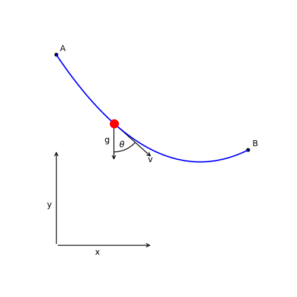
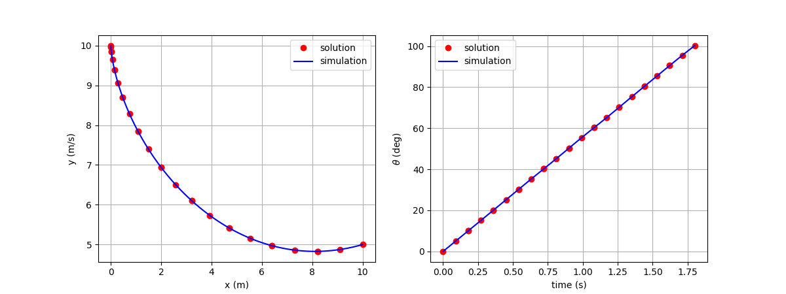

Brachistochrone: A simple optimal control example¶
We seek to find the optimal shape of a wire between two points (A and B) such that a bead sliding without friction along the wire moves from point A to point B in minimum time.
{kind=link}
We minimize the final time, \(t_f\), by varying the dynamic control, \(\theta\), subject to the dynamics:
\[\begin{split}\frac{d x}{d t} &= v \sin(\theta) \\
\frac{d y}{d t} &= v \cos(\theta) \\
\frac{d v}{d t} &= g \cos(\theta)\end{split}\]
The initial conditions are
\[\begin{split}x_0 &= 0 \\
y_0 &= 10 \\
v_0 &= 0, \\\end{split}\]
and the final conditions are
\[\begin{split}x_f &= 10 \\
y_f &= 5 \\
v_f &= \mathrm{free}\end{split}\]
1. The ODE System: brachistochrone_ode.py¶
class BrachistochroneODE(om.ExplicitComponent):
def initialize(self):
self.options.declare('num_nodes', types=int)
def setup(self):
nn = self.options['num_nodes']
# Inputs
self.add_input('v', val=np.zeros(nn), desc='velocity', units='m/s')
self.add_input('g', val=9.80665, desc='acceleration of gravity', units='m/s**2')
self.add_input('theta', val=np.zeros(nn), desc='angle of wire', units='rad')
self.add_output('xdot', val=np.zeros(nn), desc='horizontal velocity', units='m/s')
self.add_output('ydot', val=np.zeros(nn), desc='vertical velocity', units='m/s')
self.add_output('vdot', val=np.zeros(nn), desc='acceleration mag.', units='m/s**2')
# Setup partials
arange = np.arange(self.options['num_nodes'], dtype=int)
self.declare_partials(of='vdot', wrt='g', rows=arange, cols=np.zeros(nn, dtype=int))
self.declare_partials(of='vdot', wrt='theta', rows=arange, cols=arange)
self.declare_partials(of='xdot', wrt='v', rows=arange, cols=arange)
self.declare_partials(of='xdot', wrt='theta', rows=arange, cols=arange)
self.declare_partials(of='ydot', wrt='v', rows=arange, cols=arange)
self.declare_partials(of='ydot', wrt='theta', rows=arange, cols=arange)
def compute(self, inputs, outputs):
theta = inputs['theta']
cos_theta = np.cos(theta)
sin_theta = np.sin(theta)
g = inputs['g']
v = inputs['v']
outputs['vdot'] = g * cos_theta
outputs['xdot'] = v * sin_theta
outputs['ydot'] = -v * cos_theta
def compute_partials(self, inputs, jacobian):
theta = inputs['theta']
cos_theta = np.cos(theta)
sin_theta = np.sin(theta)
g = inputs['g']
v = inputs['v']
jacobian['vdot', 'g'] = cos_theta
jacobian['vdot', 'theta'] = -g * sin_theta
jacobian['xdot', 'v'] = sin_theta
jacobian['xdot', 'theta'] = v * cos_theta
jacobian['ydot', 'v'] = -cos_theta
jacobian['ydot', 'theta'] = v * sin_theta
2. Setting up and solving the optimal control problem¶
import numpy as np
import openmdao.api as om
import dymos as dm
import matplotlib
matplotlib.use('Agg')
import matplotlib.pyplot as plt
#
# Define the OpenMDAO problem
#
p = om.Problem(model=om.Group())
#
# Define a Trajectory object
#
traj = dm.Trajectory()
p.model.add_subsystem('traj', subsys=traj)
#
# Define a Dymos Phase object with GaussLobatto Transcription
#
phase = dm.Phase(ode_class=BrachistochroneODE,
transcription=dm.GaussLobatto(num_segments=10, order=3))
traj.add_phase(name='phase0', phase=phase)
#
# Set the time options
# Time has no targets in our ODE.
# We fix the initial time so that the it is not a design variable in the optimization.
# The duration of the phase is allowed to be optimized, but is bounded on [0.5, 10].
#
phase.set_time_options(fix_initial=True, duration_bounds=(0.5, 10.0), units='s')
#
# Set the time options
# Initial values of positions and velocity are all fixed.
# The final value of position are fixed, but the final velocity is a free variable.
# The equations of motion are not functions of position, so 'x' and 'y' have no targets.
# The rate source points to the output in the ODE which provides the time derivative of the
# given state.
phase.add_state('x', fix_initial=True, fix_final=True, units='m', rate_source='xdot')
phase.add_state('y', fix_initial=True, fix_final=True, units='m', rate_source='ydot')
phase.add_state('v', fix_initial=True, fix_final=False, units='m/s',
rate_source='vdot', targets=['v'])
# Define theta as a control.
phase.add_control(name='theta', units='rad', lower=0, upper=np.pi, targets=['theta'])
# Minimize final time.
phase.add_objective('time', loc='final')
# Set the driver.
p.driver = om.ScipyOptimizeDriver()
# Allow OpenMDAO to automatically determine our sparsity pattern.
# Doing so can significant speed up the execution of Dymos.
p.driver.declare_coloring()
# Setup the problem
p.setup(check=True)
# Now that the OpenMDAO problem is setup, we can set the values of the states.
p.set_val('traj.phase0.states:x',
phase.interpolate(ys=[0, 10], nodes='state_input'),
units='m')
p.set_val('traj.phase0.states:y',
phase.interpolate(ys=[10, 5], nodes='state_input'),
units='m')
p.set_val('traj.phase0.states:v',
phase.interpolate(ys=[0, 5], nodes='state_input'),
units='m/s')
p.set_val('traj.phase0.controls:theta',
phase.interpolate(ys=[90, 90], nodes='control_input'),
units='deg')
# Run the driver to solve the problem
p.run_driver()
# Check the validity of our results by using scipy.integrate.solve_ivp to
# integrate the solution.
sim_out = traj.simulate()
# Plot the results
fig, axes = plt.subplots(nrows=1, ncols=2, figsize=(12, 4.5))
axes[0].plot(p.get_val('traj.phase0.timeseries.states:x'),
p.get_val('traj.phase0.timeseries.states:y'),
'ro', label='solution')
axes[0].plot(sim_out.get_val('traj.phase0.timeseries.states:x'),
sim_out.get_val('traj.phase0.timeseries.states:y'),
'b-', label='simulation')
axes[0].set_xlabel('x (m)')
axes[0].set_ylabel('y (m/s)')
axes[0].legend()
axes[0].grid()
axes[1].plot(p.get_val('traj.phase0.timeseries.time'),
p.get_val('traj.phase0.timeseries.controls:theta', units='deg'),
'ro', label='solution')
axes[1].plot(sim_out.get_val('traj.phase0.timeseries.time'),
sim_out.get_val('traj.phase0.timeseries.controls:theta', units='deg'),
'b-', label='simulation')
axes[1].set_xlabel('time (s)')
axes[1].set_ylabel(r'$\theta$ (deg)')
axes[1].legend()
axes[1].grid()
plt.show()
